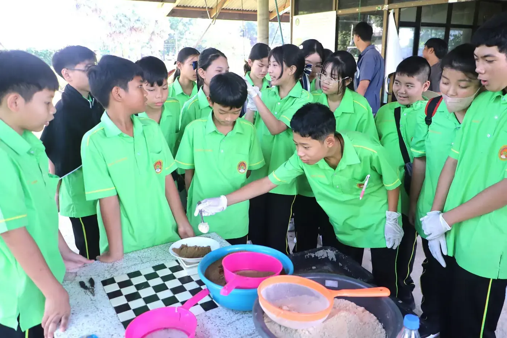
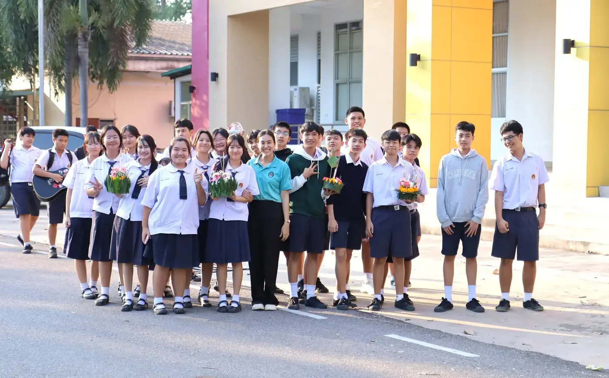
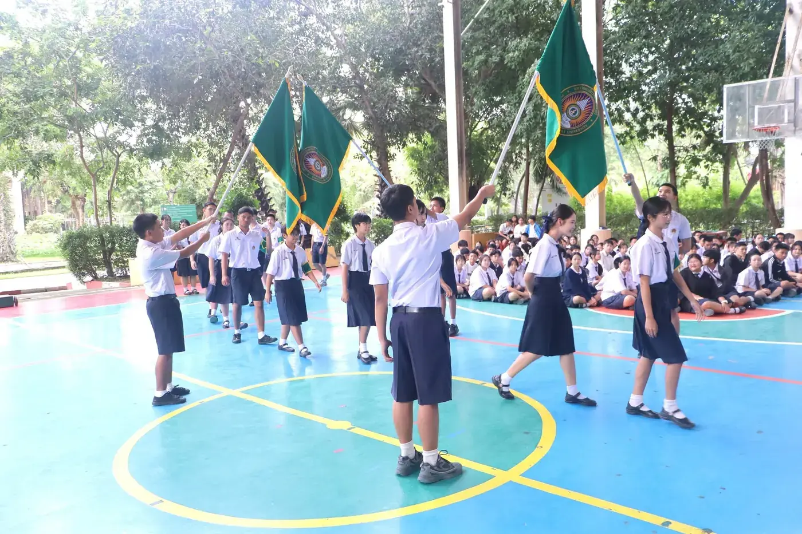
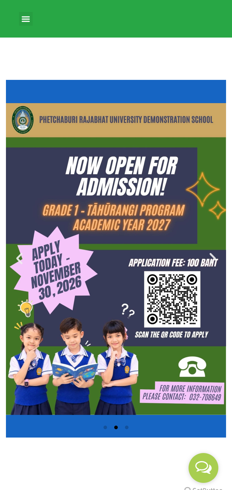
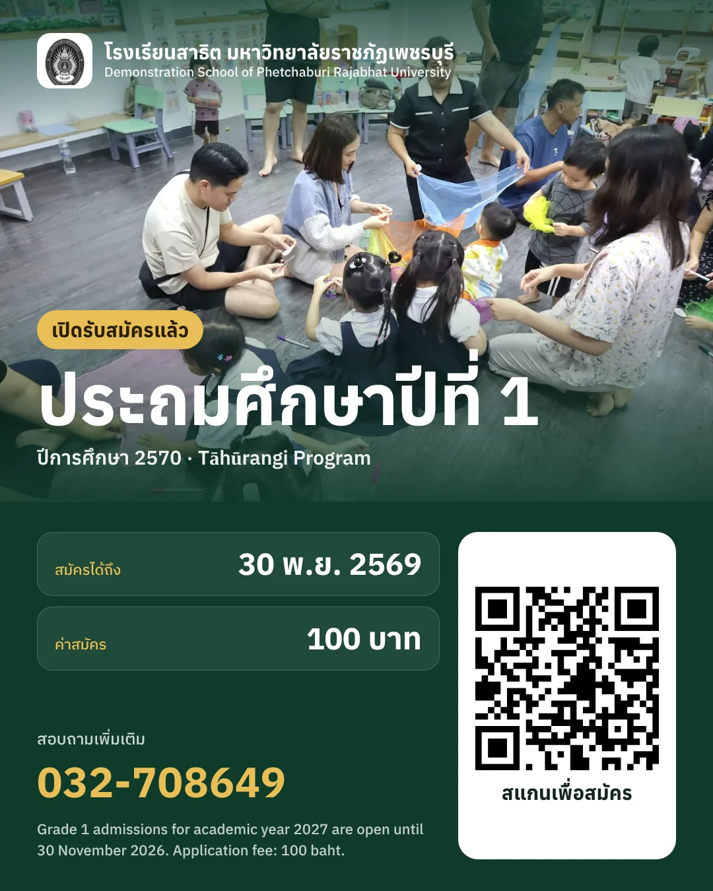

ผู้ปกครองเห็นอะไร
เมื่อเปิดเว็บเรา
บนมือถือ?
เก็บคำตอบไว้ในใจ เราจะเฉลยในหน้าสุดท้าย
ภาพ: เพจ Facebook โรงเรียนสาธิต มรภ.เพชรบุรี (ใช้โดยได้รับอนุญาต)
ผู้ปกครอง
ต้องรอนานแค่ไหน
เว็บเดิม
เว็บใหม่ · เร็วขึ้นราว 9 เท่า
เวลาจนเห็นเนื้อหาหลักบนจอ (LCP) วัดด้วย Lighthouse จำลองมือถือบนเน็ต 4G · การแข่งบนจอย่อเวลาลง 2.5 เท่า
หนักกว่า 7 เท่า ต่อการเปิดหนึ่งครั้ง
114 ไฟล์ · 9.9 MB
25 ไฟล์ · 1.4 MB
ยิ่งหนัก ยิ่งช้า และยิ่งกินเน็ตมือถือของผู้ปกครอง
เฉพาะรูปบนหน้าแรกของเว็บเดิม 15 รูป ก็หนัก 6.2 MB แล้ว
เบอร์โทร
อยู่ลึก 7 จอ
บนมือถือ เว็บเดิมซ่อนเบอร์ไว้ท้ายหน้า และกดโทรออกไม่ได้
เว็บใหม่: แตะเดียว
การ์ด "ติดต่อโรงเรียน" อยู่ในจอแรก กดแล้วโทรออกได้ทันที
จะสมัครเรียน: เว็บเดิม 3 แตะ · เว็บใหม่ 1 แตะ
เซิร์ฟเวอร์ บอกทุกคน ว่าใช้อะไรอยู่
ทุกครั้งที่มีคนเปิดเว็บเดิม เซิร์ฟเวอร์ตอบกลับพร้อมชื่อและรุ่นของซอฟต์แวร์ เหมือนติดป้ายหน้าบ้านว่าใช้กุญแจรุ่นไหน
PHP 7.3
ภาษาที่ใช้สร้างเว็บ เลิกออกแพตช์ความปลอดภัย 6 ธ.ค. 2564
หมดอายุOpenSSL 1.1.1
ตัวเข้ารหัสการเชื่อมต่อ เลิกดูแล 11 ก.ย. 2566
หมดอายุApache 2.4.52
ตัวเซิร์ฟเวอร์ รุ่นล่าสุดคือ 2.4.71
ตกรุ่นเปิดแบบ http:// ได้ ไม่บังคับเข้ารหัส (ไม่มี HSTS)
ผู้ปกครองเสี่ยงอะไรบ้าง

เงินค่าสมัครไปไม่ถึงโรงเรียน
1. QR ค่าสมัครถูกสลับ
ถ้าเปิดเว็บผ่าน Wi-Fi สาธารณะแบบ http:// คนในเครือข่ายเดียวกันอาจแก้หน้าเว็บระหว่างทาง เช่น เปลี่ยน QR บนโปสเตอร์
2. หน้าเว็บถูกแก้หรือฝังลิงก์หลอก
ซอฟต์แวร์ที่เลิกออกแพตช์ จะไม่ถูกแก้เมื่อมีคนพบช่องโหว่ใหม่
3. บอตสแกนหาช่องโหว่อัตโนมัติ
เว็บบอกรุ่นปลั๊กอิน WordPress ไว้ในหน้า ทำให้บอตเลือกช่องโหว่ได้ตรงจุด
เป็นความเสี่ยงที่ "อาจ" เกิด · ไม่ได้ทดสอบเจาะระบบ และไม่ได้พบว่าเว็บถูกเจาะ · ควรให้ฝ่ายไอทีของมหาวิทยาลัยตรวจสอบ
ดีขึ้นเกือบทุกด้าน บอกตรงๆ ด้วย
ความเร็ว
Performance
ทุกคนใช้ได้
Accessibility: ผู้สูงอายุ สายตาไม่ดี
มาตรฐานเว็บ
Best Practices
Google หาเจอ
SEO
หลังวัดผล เราแก้จุดที่เสียคะแนนแล้ว (ไอคอนแท็บ สีตัวอักษร ลำดับหัวข้อ) วัดซ้ำได้ ทุกคนใช้ได้ 100 · มาตรฐานเว็บ 100 · SEO 100
ลองลาก
ดูด้วยตัวเอง
หน้าจอแรกที่ผู้ปกครองเห็นบนมือถือ ซ้ายคือเว็บเดิม ขวาคือเว็บใหม่
เว็บที่ ผู้ปกครองใช้ง่าย
ลองเปิดดูได้เลย
mmjx2013-png.github.io/aia-slides/satit
ครูโพสต์กิจกรรมเอง ใน 3 ขั้น
1. เข้าสู่ระบบ
2. อัปรูปและตั้งชื่อกิจกรรม · 3. กดเผยแพร่
ล็อกอินแยกรายคน · ทุกการแก้ไขย้อนกลับได้ · ไม่ต้องรู้เรื่องเขียนโค้ด
ตัวอย่างหน้าจอเพื่ออธิบายขั้นตอน ระบบจริงกำลังพัฒนา
เว็บใหม่ก็มีความเสี่ยง และนี่คือวิธีกัน
โปสเตอร์ที่ ผู้ปกครองอ่านออก
และสแกนได้จริง
ใช้รูปจริงของโรงเรียน สีของโรงเรียน ข้อมูลครบในหน้าเดียว ทดสอบ QR ทุกชิ้นก่อนส่ง ได้ทั้งไฟล์โพสต์ออนไลน์และไฟล์พิมพ์
ต่อชิ้น
490บาทโพสต์ + ไฟล์พิมพ์ · แก้ได้ 2 ครั้ง · ส่งใน 3 วัน
รายเดือน
1,490บาทโปสเตอร์ 4 ชิ้น + ลงข่าวบนเว็บให้ทุกชิ้น
ทั้งปีการศึกษา
14,900บาทรายเดือนตลอด 12 เดือน · ประหยัดกว่า 2 เดือน
ราคาเสนอ ปรับได้ตามที่ตกลงกัน · เว็บไซต์ใหม่มอบให้โรงเรียนฟรี
ผู้ปกครองเห็นโรงเรียนของเรา
ภายใน 2.7 วินาที
ทุกตัวเลขในสไลด์นี้ ตรวจสอบได้
- ความเร็วและคะแนน: Lighthouse 13.6.0 รัน 3 รอบต่อหน้า ใช้ค่ากลาง จาก Mac บนเครือข่ายในประเทศไทย 25 พ.ย. 2569 เวลา 13:10–13:30 น.
- คะแนนหลังแก้: Lighthouse 13 วัดซ้ำ 25 พ.ย. 2569 หลังเพิ่มไอคอนแท็บและแก้สีตัวอักษร
- ซอฟต์แวร์ของเซิร์ฟเวอร์: header ที่เว็บเดิมส่งกลับ (curl -sI) วันเดียวกัน
- PHP 7.3: สิ้นสุดการดูแล 6 ธ.ค. 2021 (php.net/eol.php)
- OpenSSL 1.1.1: สิ้นสุดการดูแล 11 ก.ย. 2023 (openssl-library.org)
- Apache: รุ่นล่าสุด 2.4.71 ตามหน้าแรก httpd.apache.org ตรวจ 25 พ.ย. 2569
- จำนวนแตะและภาพหน้าจอ: ทดสอบในเบราว์เซอร์จริง ขนาด 1440×900 และ 390×844
- ภาพถ่าย: เพจ Facebook โรงเรียนสาธิต มรภ.เพชรบุรี ใช้โดยได้รับอนุญาตจากโรงเรียน
- ข้อมูลดิบทั้งหมด: repo mmjx2013-png/aia-slides branch satit-research โฟลเดอร์ research/